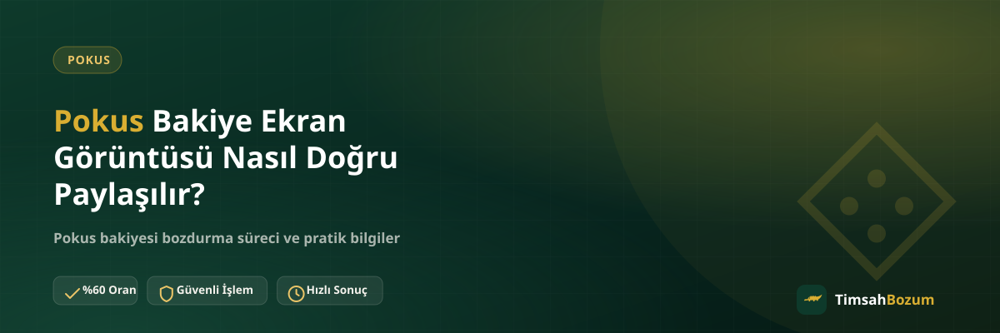

Pokus bakiyeni bozdururken paylaştığın ekran görüntüsü, işlemin ne kadar hızlı ilerleyeceğini doğrudan belirler. Bulanık, eski veya eksik bir görüntü karşı tarafın tekrar bilgi istemesine yol açar. Bu yazıda ekran görüntüsünü nasıl doğru çekip paylaşman gerektiğini, hangi bilgilerin görünmesi gerektiğini ve sık yapılan hataları anlatıyoruz.
Neden Doğru Ekran Görüntüsü Önemli?
Bozum işlemi, paylaşılan bilginin doğrulanabilir olmasına dayanır. Bakiye tutarını yazıyla belirtmek yerine ekran görüntüsüyle göstermek, karşı tarafın bilgiyi hızlıca teyit etmesini sağlar. Doğru çekilmiş bir görüntü, işlemi ilk mesajdan itibaren ilerletir ve gereksiz soru-cevap turlarını önler.
Ekran Görüntüsü Ne Zaman Alınmalı?
Ekran görüntüsünü, WhatsApp'tan yazmadan hemen önce almak en doğrusu. Önceden alınmış ve bir süre bekletilmiş bir görüntü, bakiyenin o an gerçekten hesapta olup olmadığını yansıtmayabilir. Uygulamayı açıp bakiye ekranını bir kez yeniledikten sonra görüntü alman, bilginin güncel olduğundan emin olmanı sağlar.
Görüntüde Hangi Bilgiler Görünmeli?
Bakiye tutarının net ve okunaklı şekilde görünmesi en önemli nokta. Mümkünse tarih veya güncelleme bilgisinin de ekranda yer alması, görüntünün ne zaman alındığını gösterir ve doğrulamayı kolaylaştırır. Kişisel bilgi içeren alanları (varsa) gizlemek istersen bunu yapabilirsin; doğrulama için gerekli olan yalnızca bakiye tutarı ve güncellik göstergesi.
Bulanık veya Kırpılmış Görüntü Nasıl Sorun Yaratır?
Ekranın bir kısmının kesilmesi veya görüntünün bulanık çıkması, tutarın net okunamamasına ve karşı tarafın aynı görüntüyü tekrar istemesine neden olur. Görüntüyü göndermeden önce kendi ekranında büyüterek tutarın net görünüp görünmediğini kontrol etmek, bu tür bir gecikmeyi baştan önler.
Ekran Görüntüsü Yerine Yazıyla Bilgi Vermek Yeterli mi?
Sadece "500 TL bakiyem var" gibi bir cümle, doğrulama için ekran görüntüsü kadar hızlı sonuç vermez. Yazıyla verilen bilgi genellikle ek olarak görüntü istenmesine yol açar, bu da süreci bir tur uzatır. Baştan ekran görüntüsünü hazırlayıp ilk mesajla birlikte göndermek, işlemi tek turda ilerletir.
Kısmi Bozum İçin Görüntü Farklı mı Olmalı?
Pokus bakiye tabanlı bir hizmet olduğu için bakiyenin tamamını değil, istediğin bir kısmını da bozdurabilirsin. Bu durumda ekran görüntüsü yine toplam güncel bakiyeni göstermeli; bozdurmak istediğin tutarı ayrıca mesajında belirtmen yeterli. Görüntüde ayrı bir "kısmi tutar" göstermene gerek yok, bunu WhatsApp mesajında yazılı olarak iletmen yeterli.
Ekran Görüntüsü Paylaşmak Hesabıma Erişim Vermek Anlamına mı Gelir?
Hayır. Bir ekran görüntüsü paylaşmak, hesabına erişim vermek değildir; sadece bakiyeni görsel olarak doğrulamanı sağlar. Pokus bozdurma sürecinde şifre, giriş bilgisi veya hesap erişimi istenmez. Böyle bir talep gelirse bu, resmi sürecin dışında bir girişimdir.
Görüntüyü Nereden ve Kime Göndermeliyim?
Ekran görüntüsünü yalnızca resmi WhatsApp hattımızdan (+90 543 887 21 71) paylaş. Başka bir numaradan veya platformdan (Instagram DM gibi) gelen taleplere görüntü göndermeden önce numarayı doğrula. Sitede yayınlanan numara dışında bir yerden ulaşıldığını düşünüyorsan, bilgi paylaşmadan önce resmi hattan teyit almak en güvenlisi.
Görüntü Gönderdikten Sonra Süreç Nasıl İlerler?
Ekran görüntüsün ve bakiye tutarın doğrulandıktan sonra güncel oran teyit edilir. Oran onaylandıktan sonra ödeme, WhatsApp üzerinden görüşülen yöntemle yapılır. Bu aşamaya kadar üyelik, form doldurma veya ek bir belge istenmez; tek ihtiyacın doğru çekilmiş bir ekran görüntüsü ve WhatsApp üzerinden iletişim.
Ekran Görüntüsü Yanlışlıkla Eski veya Farklı Bir Bakiyeyi Gösterirse Ne Olur?
Bazen yanlışlıkla farklı bir hesaba ait ya da güncellenmemiş bir görüntü gönderilebilir. Böyle bir durumda işlem iptal olmaz, sadece doğrulama aşamasında karşı taraf güncel görüntüyü tekrar ister. Bunu önlemenin en pratik yolu, görüntüyü göndermeden hemen önce bakiye ekranını bir kez daha kontrol etmek ve doğru hesaba ait olduğundan emin olmak. Karışıklık fark edilirse, doğru görüntüyü göndermen yeterli; süreç kaldığı yerden devam eder.
Aynı Anda Birden Fazla Ekran Görüntüsü Göndermek Gerekir mi?
Hayır, tek bir güncel ekran görüntüsü doğrulama için yeterli. Farklı zamanlarda alınmış birden fazla görüntü göndermek karışıklığa yol açabilir, çünkü karşı taraf hangi tutarın geçerli olduğunu netleştirmek zorunda kalır. Bakiyende bir değişiklik olduysa, en güncel görüntüyü tek başına paylaşman süreci daha net ilerletir.
Ekran Görüntüsünü Nasıl Bir Cihazdan Almalısın?
Ekran görüntüsünü doğrudan bakiyeyi gösteren uygulama veya sayfa üzerinden almak, üçüncü bir kaynaktan alınmış (örneğin başka birinin telefonundan çekilmiş) bir görüntüden daha güvenilir kabul edilir. Kendi cihazından, ilgili ekranı açıp aldığın bir görüntü, doğrulama sürecinde ek soru sorulma ihtimalini azaltır. Görüntüyü aldıktan sonra göndermeden önce tekrar açıp tutarın doğru göründüğünü kontrol etmen, son bir güvenlik adımı olarak faydalı.
Bakiyeni doğru bir ekran görüntüsüyle hazırladıktan sonra WhatsApp hattımıza yazarak işlemini başlatabilirsin.
İlgili Yazılar
- Pokus Bakiyesi Bozdurmadan Önce Kontrol Etmen Gerekenler
- Pokus Bakiyesi Nedir, Nasıl Oluşur?
- Bozum İşlemi Yaparken Nelere Dikkat Etmeli